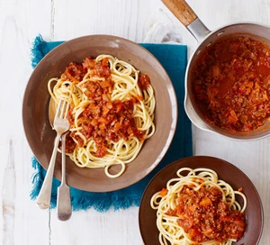

Spaghetti Bolognese
Description
A classic Italian dish with a meaty sauce served with spaghetti.
Ingredients
- 1 tablespoons of olive oil
- 4 rashers smoked streaky bacon, finely chopped
- 2 medium onion, finely chopped
- 2 carrots, trimmed and finely chopped
- 2 celery sticks, finely chopped
- 2 garlic cloves, finely chopped
- 2-3 sprigs of rosemary leaves, finely chopped
- 500 g of beef mince
- 2 x 400 g tins plum tomatoes
- small pack basil leaves, 3/4 finely chipped and the rest for garnish
- 1 teaspoon of dried oregano
- 2 fresh bay leaves
- 2 tablespoons tomato purée
- 1 beef stock cube
- 1 red chilli, deseeded and finely chopped
- 125 ml red wine
- 6 cherry tomatoes, sliced in half
- 75g parmesan grated, plus extra to serve
- 400g spaghetti
- crusty bread to serve (optional)
Steps
- Heat the oil in a large saucepan on medium heat.
- Add 4 finely chopped bacon rashers and fry for 10 minutes until golden and crisp.
- Reduce the heat and add the 2 onions, 2 carrots, 2 celery sticks, 2 garlic cloves and the leaves from 2-3 springs rosemary, all finely chipped. Then fry for 10 minutes. Stir the veg often until it softens.
- Increase the heat to medium-high, add 500g beef mince and cook stirring for 3-4 mins until the meat is browned all over.
- Add 2 tins plum tomatoes, the finely chopped leaves from ¾ small pack basil, 1 tsp dried oregano, 2 bay leaves, 2 tbsp tomato purée, 1 beef stock cube, 1 deseeded and finely chopped red chilli (if using), 125ml red wine and 6 halved cherry tomatoes. Stir with a wooden spoon, breaking up the plum tomatoes.
- Bring to the boil, reduce to a gentle simmer and cover with a lid. Cook for 1 hr 15 mins stirring occasionally, until you have a rich, thick sauce.
- Add the 75g grated parmesan, check the seasoning and stir.
- When the bolognese is nearly finished, cook 400g spaghetti following the pack instructions.
- Drain the spaghetti and either stir into the bolognese sauce, or serve the sauce on top. Serve with more grated parmesan, the remaining basil leaves and crusty bread, if you like.